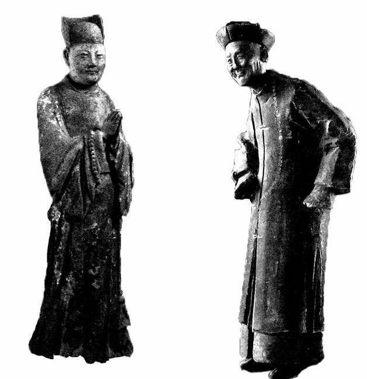
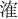
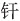

阉祸，这自永乐以来与明王朝共生共长的毒瘤，到魏忠贤，终于发展到极致，亦就此划上句号。不过，对这样的人、这样的事，读明史读到后来，人们可能都有一种厌倦与麻木。因为实在太多，如过江之鲫，连绵不断、层出不穷，以致失去兴趣。我在提笔叙述魏忠贤故事前，就突然生出无聊之感，从王振想到汪直，从汪直想到刘瑾，从刘瑾想到魏忠贤，二百年间，到处活跃着此辈的身影，专权、怙宠、浊政、殃民，无所不为，以至偶尔不见此辈动静，反倒诧异，会单独地特别指出（例如嘉靖朝）。所以，在司空见惯的意义上，阉祸在明代确实缺乏新意，从内容到形式颇相雷同，本质不变，无非为害或大或小而已，慢慢会让人提不起兴致。
但天崇年间的政治、历史，不说魏忠贤不行。一方面不说不行，一方面阉祸大同小异又让人心生倦意，怎么办？只好落笔之前，先去思索和寻找有“魏式特色”的东西。通盘想了一下，觉得“魏式特色”表现于两点：一是登峰造极，一是造就了“阉党”。尤其第二点，是十足和独一无二的“魏氏特色”，《明史》为“阉党”辟出单独一卷（第三百零六卷）、在《列传》中拿出单独一个单元（列传第一百九十四），完全由于魏忠贤——《阉党传》除了开头拿正德年间几个人凑数外（其实不足称“党”），入传者，全部是魏氏集团成员。
一阉而可以致党，这才是魏忠贤的历史价值与分量之所在，也是这次“阉祸”不得不说之处。没有“阉党”，魏忠贤不过是一个很可恶然而也很普通的丑类，有了“阉党”，魏忠贤顿时提高了档次，一下子超越王振、汪直、刘瑾，把“阉祸”发展到一个新的水平。“阉党”的产生，可谓明朝晚期政治的焦点，是精神、道德、风气彻底败坏的标志。也就是说，“阉党”虽因魏氏而起，但所反映的问题，远为广泛、深刻，表明明朝的肌体整体溃烂。
叙表之前，还有一点尚须澄清：魏忠贤搞出“阉党”，王振、汪直、刘瑾等却不曾搞出来，是魏忠贤特别能干、才具过人么？绝对不是。魏忠贤其实是个很平庸的人，论才具，休说与“知识分子出身”的王振比，即比之同样不通文墨的刘瑾，亦远不如也——刘瑾专政期间，着实显露了一些政治能力——魏忠贤其人，既无见识，处事也相当拙劣，以他罕见的熏天之势，天启崩后居然束手就擒，其愚可知。魏氏独能在明代巨珰之中登峰造极，只是时势使然。第一条，是永乐、宣德以来形成的倚信太监的政治机制；第二条，是嘉靖以来士风严重椓丧堕落；第三条，是赶上熹宗那等极度缺心眼儿、“至愚至昧之童蒙”[72]的皇帝。有此三条，魏式人物必然出现，而不在于是谁。甚至可以推断，幸而此人是憨头憨脑的魏忠贤，假若换作另一个见识、处事都更厉害的角色，朱明的天下极可能就被别人夺了去，而不能再残喘近二十年，思宗朱由检连充当亡国之君的机会都不会有。
魏忠贤，直隶肃宁人。父亲名叫魏志敏，母亲姓刘[73]。娶过妻子，生有一女。他的为人，《酌中志》和《玉镜新谭》的描述出奇一致，咸用“亡（无）赖”一词。怎样一个“无赖”法？道是：“游手好闲，以穷日月”，“日觅金钱，夜则付之缠头（客人付与艺妓的锦帛，白居易《琵琶行》：“五陵少年争缠头。”代指买欢）”，“邀人豪饮，达日不休”，[74]“孤贫好色，赌博能饮”。[75]总之，虽然出身贫贱，却生就一副纨绔子弟性情，从来不务正业，唯知声色犬马。
这样鬼混了几年，他做出一项惊人决定：自宫。关于此事缘起，说法有二。《明史》说：“与群恶少博，少胜，为所苦，恚而自宫。”[76]亦即因为赌博欠债，走投无路而自宫，以便入宫混碗饭吃。《玉镜新谭》则记为：“忽患疡毒，身无完肌，迨阳具亦糜烂焉，思为阉寺（太监），遂以此为净身者。”[77]后说虽不为正史采，却似乎更合于情理。
明代宫庭，每隔数年，会增补数千名太监，基本取自畿辅之地的河北。此地民贫，居然因此形成一种风俗，“专借（入宫）以博富贵”。本来按正常程序，应该先向官家报名，录取之后再行阉割，洪武时还规定，“擅阉有厉禁，其下手之人，罪至寸磔”。但长久以来，此禁实际已“略不遵行”，北京周遭州县，自宫成风；“为人父者，忍薰腐其子，至有兄弟俱阉，而无一人入选者”，每次入选人数与擅自自宫者之间的比例，仅为十分之一，大多数自残之人只好沦为乞丐甚至抢劫犯。沈德符北上来京途中，一过河间、任邱以北，经常于“败垣”之中得见此辈，他心惊肉跳写道：“聚此数万残形之人于辇毂之侧，他日将有隐忧。”[78]
自宫的魏忠贤，便是这“数万残形之人”中一员。他显然也没有能够立即入选，度过一段“丐阉”时光。“敝衣褴缕，悬鹑百结，秽气熏人，人咸远之。竟日枵腹，无从所归……昼潜僻巷乞食，夜投破寺假息。”[79]老婆也弃他而去，不知所终。
但他总算运气不错，流浪一段时间后，进入某内宦府中充当伙伕，担水烧火，因做事“獧捷”，赢得赏识，替他打通关节，于万历十七年——是年二十一岁——入选宫中，终不致枉然自宫一回。
虽然进了宫，但魏氏一直处在太监群体底层。“选入禁中为小火者，盖中官最下职，执宫禁洒扫负荷之役”[80]，做最脏最苦的清洁工、搬运工，跟从前吃同一碗饭，无非从宫外挪到宫内而已，一干就是许多年。
而他恶习不改，在宫中仍旧与人赌博、相邀嫖妓。曾因手头窘迫，远赴四川税监邱乘云处“抽丰”（借钱）。邱乘云与他同出于大太监孙暹门下，宫中规矩，净身入宫者都要分在某高级宦官名下归其管理，其关系“犹座师之视门生”，因此魏忠贤与邱乘云相当于同门之谊，这才不远千里跑去求助于他，但因事先太监徐贵把魏忠贤素日种种无赖告知邱乘云，令邱心极厌恶，待魏到来，不但不给钱，反把他吊在空房中三天，险些饿死。这件事说明：第一，魏氏进宫后境遇基本没有改变，很长一段时间仍然维持着百无聊赖的“流氓无产者”生存方式；第二，毫无地位，邱乘云并非高级宦官，但魏氏距他尚有十万八千里，以致邱可随意取他性命——以这情形推测，魏氏本无可能爬至后来的高位，之能那样，实为运气极好的奇迹。
魏在四川被和尚秋月所救。秋月劝说邱乘云发十两银子作为路费，打发魏回京，又致书所熟识的内官监（宫庭基建处兼总务处）总理马谦。马谦是个好心人，魏忠贤私自出宫，是重罪，马谦看他可怜，兜住此事，并让他到甲字库（宫庭染料供应科）落脚，仍旧干清洁工、搬运工。
魏氏时来运转，是在万历末年。他年逾五旬，在宫中打杂已三十来年，眼看这辈子就这么交待了。那时，朱由校生母王氏“无人办膳”，魏忠贤运作一番，得到这份差事。在他，跟以往在宫中纯粹做苦力相比，不失为一种改善。但绝不是什么美差。盖因当时太子朱常洛，也如同乃父万历皇帝昔年一样，由于替自己生下长子的女人身份低贱而对其极其冷漠，所以王氏才落到“无人办膳”的地步。奴才的贵贱，全视主子的荣辱而定；给如此边缘化的主子当奴才，不可能意味着有远大前程，稍有能耐和靠山的人，都瞧不上这份差事。魏忠贤愿意给王氏烧火做饭，只觉境况稍强而已，不存更多奢望。但，王氏毕竟乃皇长孙生母；由这条线索，引出其他千丝万缕的关系，不知不觉间，谁都不放在眼里乃至谁都可以踹上一脚的老魏头，命运一点一点地发生着变化。
首先，他得以“亲密接触”当时的小皇孙、日后的天启皇帝朱由校，经常设法弄来“财物、玩好，以至非时果品、花卉之类”“转献先帝（指朱由校）”[81]，在朱由校童年记忆中占据有利位置。其次，由于工作，先是结识太子朱常洛心腹太监王安手下的红人魏朝，与之八拜成交；进而与魏朝的“对食”、朱由校奶妈客氏接近，彼此除工作关系外，又有了私下来往的理由与空间，以至暗中“相厚”——这种关系后来成为他崛起的最坚实基石。第三，万历四十七年，王氏病亡，朱常洛所宠爱的李选侍认为失去母亲的朱由校奇货可居，争得了对朱由校的监护权，这样，魏忠贤作为服务人员一同进入李选侍宫中，不久就在光宗（朱常洛）去世后的“移宫案”中充当重要角色，虽然险些因此完蛋，但这番经历却是他真正走上政治舞台的开端，对扭转自己一贯的卑微心理，唤醒对权力的渴望和野心，极具价值。
这段经历的重要，不在于魏忠贤捞到多大实际好处，而在于帮助他完成从“小人物”向“风云人物”的心理转变。
魏这个人，刘若愚有几句话[82]，把大家对他的看法、印象归纳了一下——当然，是宫中那些知根知底的老相识的看法、印象，至于他发达起来以后外面人的看法、印象，肯定是另一种样子了。
刘若愚说：“忠贤少孤贫好色，赌博能饮。”这是一个侧面的概括。好色，酷爱赌博，酒量大。这三个特征很突出，在同事中间是出了名的。
又说他平时的为人“啖嬉笑喜”，是个挺快活、挺随和或者挺没正经的人，涎皮笑脸，打打闹闹，滑稽圆通。如果把这看成一种身体语言，它通常出现在社会地位低下，意识到自己身份、能力和处境比较弱势的人身上。一方面是自我保护、防卫的需要，另一方面，也反映出主体的不自信的心理。反之，一个人感到自己很强势，断不会在人前采取这样的姿态和形容——谁见过“大人物”们的脸上，会有一副“啖嬉笑喜”的表情呢？
还有两个评价：“担当能断”、“喜事尚谀”。前者讲他够义气，敢作敢当，冲动；后面则讲他爱出风头、特别爱在出头挑事之后接受别人的吹捧。这两种表现，也都透露了魏忠贤的社会处境和内心秘密：有一种长期被人瞧不起的焦虑，很需要以强烈、引人注目的举动来寻求补救，证明自己；这些举动，时常带有轻率和刻意的色彩，目的就是取得群体的认可，并且迫切地渴求表扬。一般来说，这不是在社会或人群中享有优越、稳固地位与声望的人之所为。
他还喜欢“鲜衣驰马”，炫耀膂力和箭术，他似乎是一个左撇子，“右手执弓，左手彀弦”，且“射多奇中”。看来，这是能够带给他“英雄主义”自我感受的不多的一个方面，故而尤为热衷表现给人看。
总的来看，魏忠贤素日举止既不得体，心态也不沉稳，轻躁易激，多动少安，心虚气浮。这样的人，很难令人敬重，也不值得惧怕、避让。所以大家对他的态度，多为轻视戏蔑，从没人把他当回事，“人多以‘傻子’称之”。
“傻子”的外号，活画出魏氏发迹前的卑微可怜，以及他在众人心目中的地位。从事后看，魏的“傻”，并非智力缺陷，并非缺心眼儿，而是卑微可怜的地位折射到心理和行为上，使别人对他产生轻视。
当然也有好处。朱由校让客氏在二魏中挑一个替自己“管事”，她做了一番比较：魏朝“狷薄”，而魏忠贤“憨猛好武，不识字之人朴实易制”。狷薄是固执、偏拗、器量狭小、不宽容、难相处；魏忠贤没有这些毛病，“憨”而“朴实”。这与其说仅仅是性格不同，不如说也很符合他们各自在宫中的地位，而客氏在这里则本能地流露了一点女权意识，在两个“男人”间，挑选了比较弱势的一个。
傻人有傻福。这种“傻”，这种“憨”，不单使他赢得最有权势的女人的芳心，进而更享受着这女人亲手替他安排的飞黄腾达的前程，“逾年由小火者躐进司礼监”[83]。与一般想象的不同，这颗政治巨星的诞生，主要并不是他本人孜孜以求的结果。从对史料的分析来看，久已养成的“小人物”心态，起初严重制约了他的野心；当巨大的权力摆到他面前时，他甚至显得木讷，并没有扑过去一把攥在自己手中。
朱由校即位后，政治格局自然重新洗牌，外廷内廷都面临一系列人事变动。在内廷方面，最重要的司礼监的领导位置，显然非王安莫属。朱由校也的确发表了这样的任命。王安接到任命，上表辞谢。这本属惯例，一种政治套路。这时，不得不提到一个叫王体乾的人，时任司礼监秉笔太监，相当于第三把手，做梦都想当上一把手，听说王安辞不就任，决心抓住这不是机会的机会。他马上想到一个人——那是唯一可以依靠的人——“急谋于客魏夺之”[84]。客氏一直不喜欢王安，甚至有点怕他，因为此人太“刚直”，如果王安出掌司礼监，日后她出入宫禁以及所有其他事上，必多有不便；相反，王体乾则是一个“软媚”之人，如助他登上司礼监首脑宝座，他不会不识时务，不会不听话。客氏这女人相当有政治头脑。她的设计是：让王体乾当一把手，让相好魏忠贤当二把手。这种安排，一箭三雕——第一，送给王这样的人情，结成同盟，扳倒王安；第二，王体乾不论居何高位，总归会是傀儡，平时具体事务让他出面张罗、兜揽，更好；第三，相好魏忠贤，直接当司礼监第一把手，实在太过夸张，不好办，王体乾将二把手位子腾出来给魏忠贤，已是一步登天，将来设法让魏氏以司礼监秉笔太监兼领东厂，实权更大。客氏、王体乾之间达成协议，遂找来魏忠贤一起商量。魏忠贤乍闻此事，很不雄才大略的“小人物”心态又表露出来——他居然念及王安在“移宫案”后，保护过他，救己一命，“犹预（豫）未忍”。王体乾见状，私下又“以危言动客氏”，客氏在枕边把魏忠贤好好训斥了一番：“外边（指廷臣）或有人救他，圣心若一回，你我比西李（李选侍）如何？终吃他亏。”这个提醒很关键；“移宫”中魏忠贤站在李选侍一边，很积极，虽赖王安遮挡，安然解脱，但把柄终捏于人手，万一哪天“旧事重提”，那可……这么一想，“贤意遂决”。
可见魏忠贤并不是一步到位，从一开始就凭作威福、玩弄事机、骄横肆纵，他也是“在斗争中成长”，慢慢地学会颐指气使、恣威擅权。
骤列大珰，短短数年，从魏傻子摇身而为“九千九百九十九岁”（只比万岁朱由校少一岁），史无前例。但表面上的不可一世背后，这位有史以来最大的政治暴发户，向来就不曾从微贱的往昔和记忆中完全走出来。有件事很说明了这一点。魏忠贤跃升司礼监秉笔太监之后，当年那个曾经困厄过他的四川税监邱乘云，撤任回京，魏忠贤故意派一名太监专程到南郊迎接，邱赏了来人三十两银子，那人回来向魏忠贤汇报，魏竟当时落下泪来，说：“我先年被徐贵谮害，止给我十两路费，今赏尔如此，便三倍我了。”说完，“叹息者久之”。创巨痛深，可见一斑。穷其一生，不管这个人怎样一手遮天，归根结底，他骨子里仍旧是“小人物”，到最最关键时刻，“小人物”心态还是让他安安静静地引颈就戮。关于魏忠贤，人们对这一点以往谈论得很不够。
大计既定，一切由客氏斡旋。她径见朱由校，“劝帝从其请（指王安辞不就任的请求）”[85]，同时，经嗾使，兵科给事中霍维华于天启元年五月十二日疏论王安，加以攻击。这开了先河，“是为奄党第一功也”[86]，霍也成为后来波澜壮阔的阉党的先驱。有人弹劾，客氏加大了嚼舌头力度，不断危言耸听。朱由校至愚至昧，分不清好歹，唯对客氏百依百顺，良心也教狗吃了，居然将一手把他从险境中救出并扶上龙床的王安，发往南海子净军；客氏“遂矫旨准安辞免，将司礼监印付体乾掌之”[87]。
王安死得很惨。先欲将其饿死，后失去耐心，一说勒死，一说纵狗咬死。王安亲手救过朱由校和魏忠贤，却恰恰由这两人联手消灭。
王安被除，内廷座次全部重新论定。由于客氏这个背景，在司礼监排名第二的魏忠贤，却是整个内廷事实上的核心人物。王体乾首先把自己位置摆得很正，“故事（惯例），司礼掌印者位东厂上。体乾避忠贤，独处其下”[88]。自他而下，内廷有头有脸的人物，咸惟魏氏马首是瞻。
应该佩服客氏这个女人，头发虽长，见识却一点不短。她拍板与王体乾结盟，除掉王安。这很有先见之明；干掉王安没多久，就发生外廷请求皇上将客氏遣散出宫的事件，假设王安仍在，与朝臣里应外合，朱由校十有八九是抵挡不住的。眼下，只是外廷单独闹事，处境好很多。朱由校和客氏，一起咬住牙关，顶了四五个月，终于击退群臣。天启元年十二月，先将主要干将之一的吏部尚书周嘉谟罢免，翌年三月再驱逐另一干将、大学士刘一燝，六七月间，刑部尚书王纪、礼部尚书孙慎行分遭革职、罢免，十月，都察院两位高层左都御史邹元标、左副都御史冯从吾也被赶走。
七搞八搞，转眼间力量对比的天平就偏向了魏氏集团这一边。这带来什么结果呢？当然是“阉党”的形成。
假使在嘉靖以前，像这样力量平衡的打破，不至于成为“阉党”的温床。那个时候，士大夫气节很盛，骨头很硬，不要说一时的逆境不足以让他们俯首，就算到头破血流的地步，坚持抗争者也有人在。不妨回想一下朱棣篡权之初的白色恐怖，成百上千地杀人，也不曾把大家吓倒。即便到了嘉靖年间，“大礼议”之中，正气也仍占上风，左顺门请愿时有那么多士夫站出来，不避斧钺和大棒。可是这么刚正的一个群体，也慢慢地教明代历任君主摧眉折腰，销蚀成明哲保身、贪生怕死甚至卖身求荣的无耻之辈。到嘉靖后期，士风向劣坏方向转化，已是大势所趋；再经万历一朝，基本上都堕落了，正人君子仍有，但与整体比仅属星星之火，天启中他们与“阉党”可以歌泣的战斗，迸射了耀眼然而也是最后的火光，而其命运，则如恩格斯所定义的悲剧：“历史的必然要求和这个要求的实际上不可能实现之间的悲剧性的冲突。”[89]他们正义在手，却不合时宜。什么合乎时宜？“趋利”二字耳。道义一旦被摧毁，精神一旦无可守护，人就是唯利是图的动物。天启间的“阉党”，实起自万历间的“党争”；彼时，士大夫阶层因政见不同，各为门户[90]，此一现象本不足奇，如能良性竞争——例如现代民主政体下的党派政治——其实不失为进步。然而，由于士林的基本精神尺度和原则沦失殆尽，“党争”多以个人攘权夺利、荣华富贵为宗旨，但能达此目的，不问手段，廉耻全无，遂造成一种极黑暗极卑鄙之后果；崇祯进士李清用两句“知”与“不知”概括这种现实：“人知崔（崔呈秀）、魏，不知朝廷；人知富贵功名，不知名教气节。”[91]

明清太监陶俑。
人物姿态颇能反映宦官集团在明清两代不同的境遇。明太监眉清目秀、丰姿逸采，面容舒展而腰杆儿挺拔；清太监则身形佝偻、膝盖弯曲、步履不便，脸上满是谦恭的谄笑。
董其昌书《左光斗传》。
左光斗，东林巨魁，与杨涟并称“杨左”。被阉党下狱，严刑折磨致死，方苞名篇《左忠毅公逸事》有生动描写。
孟森这样辨析万历间“党争”如何演化为天启间“阉党”的原委：
至是（天启年）凡宵小谋再起者，皆知帝为童昏，惟客、魏足倚以取富贵，于是尽泯诸党，而集为奄党；其不能附奄者，亦不问其向近何党，皆为奄党之敌，于是君子小人判然分矣。神宗时庙堂无主，党同伐异，以儌利而为之，至是以奄为主，趋利者归于一途，故只有奄党非奄党之别。[92]
自甘供客、魏驱使，参劾王安的兵科给事中霍维华，是“阉党”首位加盟者，级别不高。第二年，随着周嘉谟、刘一燝、孙慎行、邹元标等重量级反阉人士的倒台，“阉党”加盟者的档次开始提升；自沈（即那个据传与客氏有私者）始，档次已提至大学士级别。到天启三年，顾秉谦、魏广微入阁，“阉党内阁”形成；四年，以首辅叶向高辞职为标志，“阉党”彻底控制政局，“自内阁、六部至四方总督、巡抚，遍置死党”[93]。
“党”之一字，今义与古义有很大差别。首先，在简化字以前，“党”与“黨”本非一字，两者各为一字，前者只用于姓氏，简化后，“党”与“黨”并为一字。其次，“黨”在古时，基本是贬义，从黑，本义：晦暗不明。《说文》：“党，不鲜也。”《论语》：“吾闻君子不党”。孔颖达注:“相助匿曰党。”古人主要是在这意义上使用“党”字的。
“东林党”的名称不是东林党人自己命名的，这晚明的政治派别起源于讲学，以东林书院为学术和思想基地。朱由校、魏忠贤为了安排罪名，把有关的人称为“东林党”，意思是这些人借讲学为名朋比为奸。
今天，我们可将东林党比为政党来理解，对“阉党”不然，它仍是一种指控，甚至咒骂，直译过来，大约相当于“附集在受阉割过的人周围的那群丑类”。这不算诬蔑，在这词中，“党”比较彻底地回归于它的“相助匿”的本义，是为污浊之个人私利汇聚起来的乌合之众。
依附魏忠贤的人，不外三类。一是
渴望富贵者，一是犯奸作科欲向魏氏寻求保护者，一是品行低下、为正人所排斥而志在报复者。正应了一句话：物以类聚，人以群分。魏忠贤就像黑社会老大，吃得开，有靠山，违法的事别人干不得他干得，可以放手作恶；这样，全体的丑类就都赶来入伙，投靠他，为他做奴才和打手的同时，也吃上一份自己的黑饭。
例如，由魏氏引入内阁的顾秉谦、魏广微，自动摆到魏忠贤家奴的位置，俯首帖耳，惟命是从。“秉谦票拟（起草诏令），事事徇忠贤指。”[94]职为首辅，实则没做过一日宰相，杨涟送给他一个称号“门生宰相”，这实在还算客气，其实他从来只是魏忠贤的叭儿狗而已。魏广微一切政务，都会事先打份小报告，请示魏忠贤，“签其函曰‘内阁家报’”[95]，毫不掩饰家奴面目，对他大家也有绰号相赠：“外魏公”，意思是“在外面的魏公公”，不过是魏忠贤的一个影子，根本不把他单独看做一个人。
这个集团，只有主子和仆从两种人。尤其有个叫崔呈秀的人，当时是御史，品质极坏，他因为贪污案子事发，都御史高攀龙、吏部尚书赵南星处理他，他就跑到魏忠贤那里，摇尾乞怜，魏忠贤答应保护他，他则索性自认为魏的干儿子。时下坊间流行一语：“见过无耻的，没见过这么无耻的”，用在崔呈秀身上最恰切——崔呈秀以前，谄附者固然不少，但还没人能够发明以儿子自居的拍马屁手法。因同姓之故，魏广微原先对魏忠贤一直自称“宗弟”，后来赶紧降格，自贬“宗侄”[96]。这种无耻，竟然成为一种攀比，一种竞争。崔呈秀叫魏阉一声爸爸，或已自觉厚颜之极，无人能出其右了，没想到“青出于蓝而胜于蓝，冰为之水而寒于水”，后来更有一大堆人把他的“想象力”加以发挥，围着魏忠贤喊“爷爷”——这就是“阉党”十孩儿、四十孙的由来。
不要以为很丢人。“阉党”内部无人感觉这是耻辱，事实上，能够名列儿孙辈，已属莫大荣耀。到得后期，各地如云谄附之徒，欲认干爹、干爷爷而不能，连这点“名分”也没有了。
倘若这些人不曾接受过什么教育，也还罢了。但他们大多饱读诗书（一小部分武人除外），对圣贤之言可谓滚瓜烂熟，由此可见，社会一旦败坏起来，教育得再好也顶屁用。我前面曾说，历代士风从不见像明代这么正派的，现在我该说，到魏氏弄国之际，历代士风也从不见这么卑下的。知识分子因为一国一民的最优质文化资产的传承人和守护者，他们往往是历史和现实的脊梁，也应该是脊梁，然而某些时代，他们非但不起这种作用，反倒没有是非和廉耻。后来大狱兴起之时，是各地普通民众勇敢地站出来声援和抗议。杨涟被解押途中，数万人夹道挥泪相送；左光斗被捕情形亦复如此，百姓闻风而至，“拥马首号哭，声震原野”，连“缇骑”都被感动得落泪。
而许多知书达礼的官员则忙着向魏忠贤献媚。天启六年，浙江巡抚潘汝祯，率先在西湖为魏忠贤建生祠，马上诸方效尤，几遍天下。开封建祠毁民居二千余间；延绥巡抚朱童蒙建生祠，采用皇家王族才可使用的琉璃瓦；苏州所建生祠，造像全部用沉香木，腹中肠肺以金玉珠宝为之；苏蓟总督阎鸣泰，一个人就为魏忠贤建祠七所，耗资数十万……其时，辽东战事方紧，开支愈来愈大，军费短缺，致军心不稳。然而保家卫国无钱，建生祠钱花得如流水；各地建生祠，“一祠之费，奚啻数万金哉！”[97]
有一位小丑，名叫陆万龄，是个监生，他提出一个骇世惊俗的建议——以魏忠贤配孔子，以魏忠贤父配启圣公（孔子之父叔梁纥），加以祭祀。他如此介绍理由：“孔子作《春秋》，忠贤作《要典》；孔子诛少正卯，忠贤诛东林。宜建祠国学西（国立大学西边），与先圣并尊。”[98]他把这道奏疏递交司业（副校长或教务长）林。林一阅，不禁掩面遮颜，羞惭难当。将陆疏一通涂抹，即夕挂冠而去。林为有这样的学生羞愧，他的继任朱之俊却不抱同感，毫不耽搁，立即代奏，当然也立即获得批准。
诚然，阉祸凶猛是明代的特色，但在以往，外廷与内廷的顽强对抗（所谓“宫府之争”）也是一大特色。权阉搞定皇帝、得到其全力支持，往往不费吹灰之力，却很难摆脱士大夫的围追堵截、死缠烂打。刘瑾最得势之时，士大夫里有那么几个卖身投靠的，但这阶层整体上未尝驯服，相反，坚忍不拔的他们最终还是将刘瑾击倒。把皇帝和士大夫双双搞定的，唯有这个魏忠贤。实际上，魏忠贤现象的出现，意义已远远超出了阉祸这个层面，而标志着一个社会的基本伦理结构完全失效与崩溃。
因此，不要只把眼睛死死盯在魏忠贤身上；应该把视线投向他身后，投向那里站着的一大群被称作“阉党”的人。这些人，受过最正统的教育，肩负守卫社会准则的责任，然而，他们彻底背叛了所受的教育，彻底抛弃了应负的责任。
这才是魏忠贤事件的真相。一个社会的真正堕落，从来不是以产生奸佞为标志，而是以奸佞在何种程度上遭到抵制为标志。只要人们不曾停止抗拒，恶势力的一时得逞就不足为虑，社会伦理的底线就仍然没有被突破。
坏人不可怕，可怕的是是非观荡然。
御史倪文焕，崇祯即位后，因附逆丢官归乡。朋友去看望他，见他大有悔意，就忍不住问：杨涟和左光斗因得罪权珰而罹祸，这样的正派人，当初你怎么会纠劾他们呢？倪文焕这样回答：
一时有一时之君子，一时有一时之小人。我居言路（御史职责，“凡政事得失，军民利病，皆得直言无避。”[99]故称言路。）时，举朝皆骂杨、左诸人，我自纠小人耳。如今看起，元（原）来是两个君子。[100]
虽属狡辩，但他的逻辑却很值得注意。正如我强调的，基本是非观已经瓦解——因此，“一时有一时之君子，一时有一时之小人”、“如今看起，元来是两个君子”这么混账透顶、恬不知耻的话，才讲得出口。“举朝皆骂杨、左”，我便心安理得跟着骂，且自认为是“纠小人”。尤其，这番话不是说在魏阉当政时，是说在那段历史已被明确否定了的崇祯年间，益发说明当时士大夫心中已无是非可言，否则，不会以为这样的话还能起替自己辩解的作用，不可能一边“若悔前非”、一边又如此谈论对自己错误的认识。
错，都不知道错在哪里。这叫无可救药。
一句“举朝皆骂杨、左”，令人寒意彻骨。说实话，跟这一句相比，魏忠贤干的那些坏事，算不了什么。不错，他滥施酷刑、残杀忠良，伙同客氏虐害后妃，以及任意伪造圣旨、广置鹰犬、大建生祠等等罪状，都骇人听闻、史所罕见，但自我看来，仍抵不过“举朝皆骂杨、左”这么一句话。没有这句话，魏忠贤再猖狂、再不可一世，也极渺小；有了这句话，突然之间，我就觉得他很强大，“须仰视才见”。
这心情，就如我在记忆中想起“文化大革命”。而今，“文化大革命”似乎只是四个丑角担纲出演的一出闹剧、喜剧，然而，只要亲眼目睹过天安门广场那上百万人壮观而可怕的红色海洋，就必不以为“文化大革命”能是区区几个“政治流氓、文痞”（郭沫若语）所折腾起来的。
将反动人物喜剧化，让曾经的魔头突然变成人人得而嘲讽的对象，的确是摆脱和走出历史梦魇的好方法。但同时我们得提醒自己，这些迅速沦为“历史的跳梁小丑”的人物，每个人身上都包含着最为沉重、严肃和不容回避的话题。倘若我们是勇敢的，应该承认几乎所有历史上著名的丑类，都得到了社会的哺育甚至拥戴。这些丑类登上历史舞台，实际上只是执行着一个任务：将本无价值的，撕破给人看。社会已糜烂至此，蛆虫方才有狂欢的机会；人类历史每一出大闹剧，皆缘自理性在一个社会或时代的沦亡。
所幸，历史终将由名叫“理性”的作者来书写；于是，丑类们最后也纷纷回归于丑类。我们的魏公公也不例外。
他的垮台，可谓纯属偶然。假使天启皇帝朱由校不年纪轻轻地死掉，我们丝毫不曾看见魏忠贤有任何垮台的迹象。虽然朱由校死了，但假使魏忠贤不犯糊涂、关键时刻由于“小人物”根性而掉链子，他也不会垮台——至少不会在天启七年十一月垮台。熹宗崩，以当时情势论，他很有成算阻止朱由检继位为君；就算他自己不去当皇帝，立个傀儡总不难，这是唐朝前辈们玩烂的把戏，有一堆的成功经验。而且客魏并非无此打算；抄家时，在客氏府中发现怀孕宫妆女子八名，“盖将效吕不韦所为”[101]，把有娠之女塞进宫去，安排机会让她们被宠幸，将来生子以冒充朱由校骨血。此事载正史，如属实，说明客魏不仅有培植傀儡的计划，且进入实施，只因朱由校过早逝世而被打断。《明史》还记载，朱由校死的当天，众目睽睽之下魏忠贤不顾一切，疯了似的派人急召崔呈秀：
内使十余人传呼崔尚书（崔呈秀时任兵部尚书）甚急，廷臣相顾愕眙。呈秀入见忠贤，密谋久之，语秘不得闻。或言忠贤欲篡位，呈秀以时未可，止之也。[102]
《玉镜新谭》引《丙丁纪略》云其细节：
忽有数内臣，招呼兵部尚书崔家来。百官相顾错愕，齐声云：“所言公（公事），当与众公言之，天下事岂呈秀一人所可擅与耶？”于是，呈秀不敢应命，而忠贤失意，无所措手足。[103]
如此紧要的生死关头，他居然没有主张，跟崔呈秀匆匆商量几句，就选择了实不难预见到的束手就擒的结局。这再次证明，魏忠贤作为坏蛋，也是个窝囊、没本事的坏蛋。遇事不能识，或识而不能断。他所以爬上权力巅峰，并不由于他是摆弄权力的高手，而主要是靠客氏这个女人，特别是天启间本身已经朽烂得不可收拾的政局。
据说，他还有一个打算：如果不再被宠信，就带着积攒起来的财富，度过“不失为富家翁”[104]的晚年。后来，贬谪凤阳时，他果然成车成车地装载着细软前往，真的打算到那里“享受生活”。这好像不是一般的傻。
他就这样傻呵呵地等着。两个月后，新君崇祯皇帝朱由检开始收拾他。
接到弹劾魏忠贤的奏疏后，朱由检把他找来，让人一字一句念给他听，观察他的反应。其实朱由检对于啃得了啃不了这根硬骨头，心里也没底，他这么做，是试探。而魏忠贤实在草包，连试探这样的考验都经受不住。他去找自己昔日的嫖友兼赌友徐应元“走后门”。徐从朱由检做信王的时候起，一直在身边当差。他的见识一点不比魏忠贤高，居然答应帮魏忠贤的忙。这事传到朱由检耳中，一下子让他吃了定心丸；就像《黔之驴》里的那头老虎，突然识破那叫声骇人、黑不溜秋的怪物，并非三头六臂，“技止此耳”。
于是，十一月一日下旨，勒令魏忠贤去凤阳祖陵司香，也就是守陵。
跟魏氏的罪行相比，这个处分不重，但肯定不是最终处分。这一着，当属“调虎离山”之意，先把魏忠贤赶出京城，孤悬在外，失去盘根错节的依托——今天对各地大贪官的处理，也需要“异地双规”，否则案子办不下去；朱由检想出的点子，与此类似。
魏忠贤听话乖顺得出奇，老老实实上了路。
果然，一离开京城，朱由检就没了顾忌。魏忠贤虽然受到贬谪，但走的时候还是“自由身”，仆从财产一大堆。行至河北阜城县，传来消息，皇上借口流放队伍“自带凶刃，环拥随护，势若叛然”，已派锦衣卫赶来，“前去扭解，押赴该处（凤阳）交割明白”。[105]
此时的魏忠贤，就真的被打回原形：还是“魏傻子”，还是奴才。只能如羔羊一般，任人宰割。得知消息，他做出了天启驾崩三个月以来唯一正确的决定：自杀。他知道自己必有一死，甚至不会等到抵达凤阳。应该说，这一次，他对自己的前景绝没有误读。
天启七年十一月六日深夜，或者十一月七日凌晨，魏忠贤在阜城县一间客店投缳自尽。死亡确切时间不明，因为人们是后来不见动静，推门入内，才发现他已经死去。屋内一共两具尸体；另一具，属于他所宠爱的一个漂亮小太监，名叫李朝钦。
有自杀的勇气，却无放手一搏的胆量，让人无法理解。在此之前，魏忠贤有造反的机会，也很有这样的条件。他不是为了表示清白与忠诚，能反而不反；他明明有企图，甚至计划。没有干，归根结底，只因骨子里就是一个“小人物”，怯懦、不自信，无从超越。他一度成为“大人物”，乃至庞然大物，非因自己能干，是从朱由校、客氏到整体坏掉的士大夫阶层一起“帮衬”的结果。
提起魏忠贤，许多人记着他如何作威作福，如何荼毒天下，如何强势的一面。在我，首先想到的却是另一面：此人一生，先后两次亲自下手，去实行对自己的严重戕害——头一次将自己阉割了，第二次索性把自己杀掉。
我对此印象更为深刻。